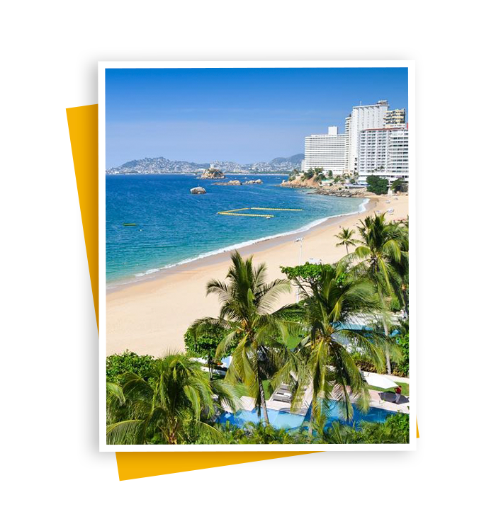
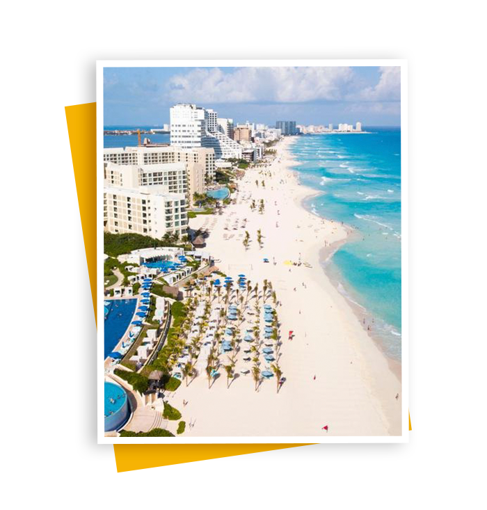

Huasteca Potosina en San Luis
- La Huasteca Potosina es un amplio espacio del estado de San Luis Potosí, que reúne un conjunto de municipios y atracciones, como si estuvieras en un pequeño país, presto a disfrutar de todos los encantos posibles.

Acapulco
- Considerado uno de los balnearios más antiguos de México, cautivando por su paradisiaca bahía situada entre montañas y acantilados.

Ciudad de México
- Capital de México, una metrópoli famosa por su vibrante vida urbana, congregando museos de relevancia mundial, emblemáticos sitios históricos, masivos festivales, glamorosas avenidas, tiendas, restaurantes, y una de las noches más animadas de Latinoamérica.

Chichén Itzá
- Es uno de los yacimientos arqueológicos más importantes del continente americano. Su Templo de Kukulcán es una de las Nuevas Siete Maravillas del Mundo Moderno, junto con la Gran Pirámide Guiza y otros 5 monumentos culturales del planeta.

Cancún
- Isla reconocida por sus playas de arenas blancas y aguas turquesas entre el Mar Caribe y la Laguna Nichupté, hogar del segundo arrecife de coral más importante del mundo después de la Gran Barrera Australiana.